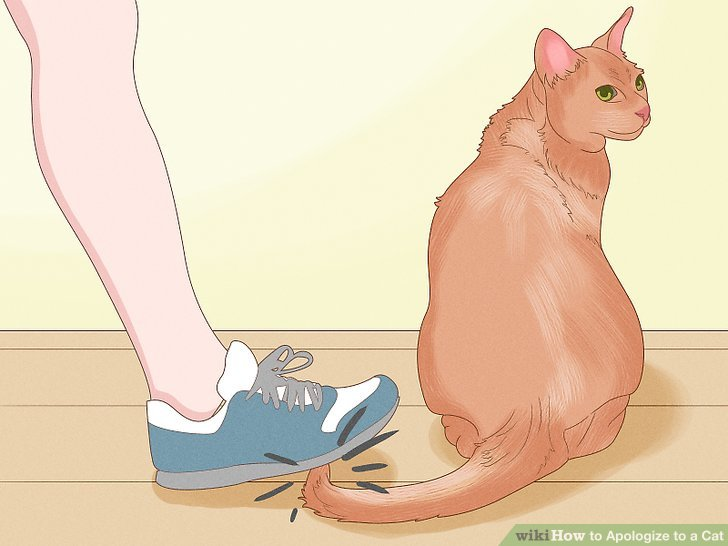

Oh no! You've done something to deeply offend your cat, and now she won't even let you come near her. Fortunately, it is possible to earn a cat's forgiveness. This article will show you not only how to apologize to your cat, but it will also show you how to do it safely, so that you don't get scratched.
Choose a good time to apologize. If your cat is visibly angry, you will need to give her some time before you try to approach her and apologize; approaching too soon may result in getting scratched.
Determine the offense. What did you do to make your cat so mad at you? Did you make fun of her? Step on her tail? Or did you take her spot on the couch?
Talk to your cat. Tell her "I'm sorry." You may even use your cat's name. Make sure that you are using a soft, calm voice, with a slightly higher pitch than usual.
Give a treat to your cat.[4] If you cat is in a more approachable mood, you can try giving him a treat directly.